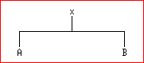

<html><head><title>

Sets as Trees

</title></head>
<BODY bgcolor = "white">


<h1>
<center>
   Lecture 16 : The Tree Representation of Sets
</center>

</h1>

<hr>
<!-- ============================================================= -->

<a href = "lecture16.html#balance"> 1   Sets as Trees </a> <br>
<pre>
      1.1   Perfectly Balanced Trees: left &amp; right branches are same size
      1.2   Well balanced trees
      1.3   AVL trees are adequately balanced
</pre>

<a href = "lecture16.html#implementation">
  2   Implementing sets as trees.</a><br>
<pre>
      2.1   Tree-nodes have four entries
      2.2   Implementing the empty set representing sets as trees
      2.3   We need the height of trees, empty or non-empty.
      2.4   (mk_tree entry left right) makes a tree.
      2.5   Making a balanced tree with make_tree
            ... Rotation is required to balance a tree
      2.6   Implementing set->list representing sets as trees
      2.7   Implementing member_set? representing sets as trees
      2.8   Implementing adjoin representing sets as trees
</pre>
<a href = "lecture16.html#other_reps">  3   Other representations of sets.
</a><br>

<a href = "lecture16.html#languages">
  4   Languages are Sets, Parsers are member_set? helpers.</a> <br>

<a name = "balance">
<h2>1  Sets as Trees</h2>

<p>
If we represent a set as a <em>balanced</em>
tree we can achieve a significant speed
up in evaluating the <tt>member_set?</tt> and  <tt>adjoin</tt>
functions.</p>


<!--
      ------------------------------------------------------------------
      |            Balanced  h=2           |      Unbalanced h = 5     |
      |------------------------------------+---------------------------|
      |                 7                  |         3                 |
      |                 |                  |         |                 |
      |      -----------------------       |      -------              |
      |      |                     |       |      |     7              |
      |      3                     9       |      1   -----            |
      |   --------              -------    |          5   8            |
      |   |      |              |     |    |            -----          |
      |   1      5              8     11   |            |   |          |
      |                                    |                9          |
      |                                    |              ------       |
      |                                    |              |    |       |
      |                                    |                   11      |
      |----------------------------------------------------------------|
      |                  Balanced and Unbalanced Trees                 |
      ------------------------------------------------------------------
-->

<p> We speak of the tree as being composed of <em>nodes</em>, each of which
contains an <em>entry</em> which is a member of the set being  represented,
a <em>left branch</em> and a <em>right branch</em>. A tree is a  <em>binary
search tree</em> with  respect to a  given total ordering  relation if  the
entry at any node is greater than all entries occurring in the left branch,
and less than all entries occurring in the right branch. This is the  first
<em>data invariant</em> for our representation of sets as trees.

<p> A tree  can also be  an <em>empty-tree</em>, which  has no entry,  left
branch or right branch.

<p> The <em>height</em> of a tree is defined as being 0 for the empty tree,
and one more  than the maximum  of the height  of the left  branch and  the
height of right branch for a non-empty tree.

<p>
The great advantage of a binary search  tree is that, if we are looking  for a
given entry, <tt>x</tt> in  a tree, we  can compare <tt>x</tt>  with the entry,  <tt>y</tt> say, to  find
which sub-tree <tt>x</tt> must lie in. If <tt>x=y</tt>
then <tt>x</tt> is in the tree, and we have  found
it. If <tt>x&lt;y</tt>
then we know that it must lie in the left branch of the tree if  it
is in  the tree  at  all, and  conversely, if  <tt>x>y</tt>
then it  must lie  in  the
right branch. If the tree  is adequately balanced, then  at each stage we  are
dividing the size of the set of values  in which we are searching by 2,  which
means that our search for <tt>x</tt> will terminate in logarithmic time.

<h3>1.1  Perfectly Balanced Trees: left &amp;
right branches are same size</h3>


<p>
A tree, such  as the  one on  the left  above, for  which the  left and  right
branches of all subtrees contain  the same number of  elements, is said to  be
<em>perfectly balanced</em>.

<p>
In a <em>perfectly
balanced tree</em>, each entry  is the <em>median</em>
of the set of  entries
in the whole subtree headed by that entry.


<h4> Theorem </h4>
A perfectly balanced tree with height h contains 2<sup>h</sup>-1 entries.

<p> Proof by induction:

<p>
<b>Base case</b>: <em>h=0</em>.
A perfectly balanced tree of height 0, that is the empty
tree, contains 0 entries. <em>2<sup>0</sup>-1 = 1-1 = 0</em>. So the result
holds.

<p><b>Inductive step:</b>

<p>
Now suppose  that for  some  <em>h</em>, all  perfectly balanced  trees  of
height  <em>h</em>
have  <em>2<sup>h</sup>-1</em>  entries.  Consider  a  perfectly
balanced tree  of  height <em>h+1</em>.  It  has two  sub-trees  of  height
<em>h</em>,    each,    by    the    inductive    hypothesis,    containing
<em>2<sup>h</sup>-1</em> entries. So  the total number  of entries for  our
tree   of   height   <em>h+1</em>   is   <em>2*(2<sup>h</sup>)-1   +    1 =
2<sup>(h+1)</sup> - 2 + 1 = 2<sup>(h+1)</sup> - 1</em>.


<p>
Suppose we have  a perfectly balanced  tree containing <em>n</em>  entries.
Then <em>n = 2<sup>(h-1)</sup> - 1</em>,
that is, taking logarithms to the  base
2, <em>h-1 = log(n+1)</em> Thus we can get to any entry in worst case  time
<em>O(log n)</em>, provided we know which branch to take at every node. 

<h3>1.2  Well balanced trees</h3>


<p>
However we may not have a set of size exactly <em>2<sup>h</sup>-1</em>
- 1 elements. Such a set
cannot be  represented by  a perfectly  balanced tree,  but we  can limit  the
amount of unbalance to maintain logarithmic time access.

<p>
Any set can be represented by a tree in which the disparity between the number
of entries in the left branch and the number in the right branch is never more
than 1. The algorithm to do this is obvious enough:

<ul>
<li>
If the set has an odd number of elements take the median element as the
entry of the tree, and recursively make a left sub-tree of all elements
less than the median, and a right sub-tree of all elements greater than
the median.

<li>
If the set has an even number of elements, take one of the 2 elements
nearest the median, and recursively make left and right sub-trees less
than and greater than this element.
</ul>


<p>
Let us call such a tree  "well-balanced". If we kept our trees  well-balanced,
then this would give us the shortest  worst-case time to find a given  element
in a <tt>member_set?</tt> operation.

<p>
However, maintaining trees in  a well-balanced form is  not practicable if  we
want an efficient implementation of <tt>adjoin</tt>.
Imagine a well-balanced tree</p>



<!--
                        ------------------------------- 
                        |              x              | 
                        |              |              |
                        |   -----------------------   |
                        |   |                     |   |
                        |   A                     B   |
                        -------------------------------
-->

<p> where <tt>A</tt> and  <tt>B</tt> are subtrees,  and <tt>size(B) =  size(A) +
1</tt>. If we now adjoin an  element <tt>y > x, y  &lt; b</tt> for all <tt>b  in
B</tt>, to  the  tree, <tt>B</tt>  becomes  one larger,  but  the  rearrangement
required to maintain the well-balanced condition can be quite expensive.

<p>
Consider, for example the tree:</p>


<!--
                     -------------------------------------
                     |                  6                |
                     |                  |                |
                     |       -----------------------     |
                     |       |                     |     |
                     |       3                     9     |
                     |    --------              -------  |
                     |    |      |              |     |  |
                     |    1                     8     11 |
                     -------------------------------------

-->


<p>Adjoin 7 - a simple algorithm gives:</p>


<!--
                  ------------------------------------------
                  |                 6                      |
                  |                 |                      |
                  |      -----------------------           |
                  |      |                     |           |
                  |      3                     9           |
                  |   --------              -------        |
                  |   |      |              |     |        |
                  |   1                     8     11       |
                  |                      -------           |
                  |                      |     |           |
                  |                      7                 |
                  ------------------------------------------
-->

<p>Adjust to make it well balanced:</p>


<!--

                    --------------------------------------
                    |                  7                 |
                    |                  |                 |
                    |       -----------------------      |
                    |       |                     |      |
                    |       3                     9      |
                    |    --------              -------   |
                    |    |      |              |     |   |
                    |    1      6              8     11  |
                    --------------------------------------
-->

<p>
It is clear from this example that we have a significant amount of work to do.
The 7 has moved from a tip of the tree to the root-node, while the 6 has moved
from the root-node to a tip. This  kind of re-arrangement could take place  in
many circumstances in  which an  entry which  "belongs" between  the left  and
right branches is adjoined to a tree of any depth.



<h3>1.3  AVL trees are adequately balanced</h3>


<p>
So, we need to look for compromise in  our idea of balance that will make  the
adjoin operation cheaper.  If we  are less  particular about  balance, we  can
adjust balance by a local  operation as we rebuild a  tree. Let us say  that a
tree is <em>adequately
balanced</em> if the branches of all sub-trees differ in  height
by no more than one. These are more commonly known as <em>AVL</em> trees.

<p>
Consider an  adequately  balanced  tree <tt>T</tt>,  with  top-level  entry
<tt>x</tt>, left and  right sub-trees <tt>A</tt>  and <tt>B</tt>, which  is
converted into a tree <tt>T'</tt> by  adjoining an element <tt>s >  x</tt>.
The right  sub-tree <tt>B  of T</tt>  will be  replaced in  <tt>T'</tt>  by
<tt>B'</tt>. Now if  <tt>height(B) =  height(A) +  1</tt>, then  <tt>T'</tt>
will be no longer adequately balanced if <tt>height(B') > height(B)</tt>.
</p>


<!--
              ---------------------------------------------------
              |                                                 |
              |       |        adjoin ==>                |      |
              |       x                                  x      |
              |    --------                           -------   |
              |    |      |                           |     |   |
              |    A      B                           A     B'  |
              |                                                 |
              |      Tree T                            Tree T'  |
              ---------------------------------------------------
-->


<p>  However  we   can  restore  adequate   balance  by  a   <em>local</em>
transformation of  <tt>T'</tt>, which  moves some  material into  the  left
branch. This requires us to analyse four distinct cases:


<p>
If the tree <tt>B'</tt>
has height 2 greater than <tt>A</tt>, it must have height at least 2. So
we can  expand  B' as  a  sub-tree, obtaining  the  following tree,  which  is
annotated with the heights.</p>


<!--

                         ----------------------------
                         |           |              |
                         |           x h            |
                         |        --------          |
                         |        |      y h-1      |
                         |   h-3  A   -------       |
                         |            |     |       |
                         |            C     D       |
                         ----------------------------
-->

<p> Since  the  original  tree  <tt>T</tt>  was  adequately  balanced,  the
unbalanced nature  of  <tt>T'</tt> must  arise  from either  <tt>C</tt>  or
<tt>D</tt> having height <tt>h-2</tt>, but <em>not both</em>, since we have
only adjoined one element.</p>



<h4>CASE 1</h4>

<p> If <tt>D</tt> has height <tt>h-2</tt> then <tt>C</tt> must have  height
<tt>h' = h-3  or h'= h-4</tt>, so  we can  move it  to the  left branch  as
follows:</p>


<!--
                             ---------------------
                             |        |          |
                             |   h-1  y          |
                             |     --------      |
                             |h-2  x      |      |
                             |  -------   |      |
                             |  |     |   D h-2  |
                             |  A     C          |
                             |h-3    h'          |
                             |                   |
                             ---------------------
-->

<p> This new  tree is  adequately balanced, and  is a  binary search  tree,
since every entry in the left sub-tree is less than <tt>y</tt>, every entry
in the  right  sub-tree is  greater  than  <tt>y</tt> and  every  entry  in
<tt>C</tt> is greater than <tt>x</tt> and every entry in <tt>A</tt> is less
than <tt>x</tt>.

<p>
We call this operation on a tree a <em>left rotation</em>.


<h4>CASE 2</h4>

<p>
This is symmetric to  CASE 1, where  the left branch becomes  too long. It  is
cured by a right rotation.

<h4>CASE 3</h4>

<p>
However, if <tt>C</tt>
has height <tt>h-2</tt> then <tt>D</tt>
must have height <tt>h"'</tt>, where <tt>h"' = h-3 </tt> or
<tt>h"' = h-4</tt>.
We can split  <tt>C</tt> into <tt>E</tt> of height <tt>h'</tt>
and <tt>F</tt> of height <tt>h"</tt>,
where
<tt>h'= h-3</tt> or <tt>h'= h-4</tt> and <tt>h" = h-3</tt> or <tt>h" =
h-4</tt>.  </p>
  


<!--
----------------------------------------------------------------------------
|                                                                          |
|            |                                     |                       |
|            x h                                   z h-1                   |
|       --------------         ==>        --------------------             |
|       |            y h-1                x h-2              y <=h-2       |
|   h-3 A        ---------            ---------         -----------        |
|            h-2 z       | h"'     h-3|       |h'       |h"       | h"'    |
|             -------    D            A       E         F         D        |
|           h'|     |h"                                                    |
|             E     F                                                      |
----------------------------------------------------------------------------
-->

<p>
Here the new tree is adequately balanced,  and is a binary search tree,  since
every entry in  the left sub-tree  is less than  z, every entry  in the  right
sub-tree is greater than z, every entry in A is less than <tt>x</tt>, every entry  in E
is greater than  <tt>x</tt>, every  entry in  F is less  than <tt>y</tt>,  every entry  in D  is
greater than <tt>y</tt>.



<p>
This tree-transformation can  be achieved  by a right  rotation followed  by a
left rotation.</p>


<!--
----------------------------------------------------------------------------
|                                                                          |
|        |                                     |                           |
|        x               right rotate          x                           |
|   --------------         ==>        --------------------                 |
|   |            y                    |                  z                 |
|   A        ---------                A             -----------            |
|            z       |                              |         y            |
|         -------    D                              E      --------        |
|         |     |                                          |      |        |
|         E     F                                          F      D        |
|                                                                          |
|                                                                          |
|                                                                          |
|                    left rotate               |                           |
|                                              z                           |
|                          ==>        --------------------                 |
|                                     x                  y                 |
|                                 ---------         -----------            |
|                                 |       |         |         |            |
|                                 A       E         F         D            |
|                                                                          |
----------------------------------------------------------------------------

-->


<h4>CASE 4</h4>
<p>
This is the symmetric condition in which the left branch becomes too long.

<a name = "implementation"></a>
<h2>2  Implementing sets as trees.</h2>


<p>
Let us now  implement sets as  AVL trees. We must first design the concrete
data-structures to represent the nodes of a tree, and decide how to represent
the empty set.

<h3>2.1  Tree-nodes have four entries</h3>


<p>
We will need to be able to decide quickly whether a tree is balanced, so it is
convenient to have a "slot"  in our representation of  a node which holds  the
height of the tree. Thus a node is represented as a record having components

<pre>
    entry
    tree_left
    tree_right
    height
</pre>

<p>
We will require that these  4-member records preserve the
<em>data-invariant</em> that
the  contents  of  the  height-slot  are  actually  the  height  of  the  tree
represented by the node.

<p>
We can use the <tt>record-class </tt>
function of UMASS Scheme to create  suitable
records for our nodes.

<pre><code>
(define class_set_tree
    (make_class 'tree class_set '()
          '(entry                          ; value at node
            left                           ;  left branch
            right                          ;  right branch
            height                         ; should be the height.
</code></pre>


<h3>2.2  Implementing the empty set representing sets as trees</h3>

<p>

We'll define the tree representation of the empty-set as being a tree-node
with its components set to false, apart from the height, which is 0

<pre><code>

(insert_static_method
    class_set_tree
    'empty
    (lambda () (send class_set_tree 'new #f #f #f 0))
    )


</code></pre>

<p>
We will also use the method:

<pre><code>

(insert_instance_method
    class_set_tree
    'null?
    (lambda (this) (not (send this 'left)))
)
</code></pre>


<h3>2.4  (mk_tree entry left right) makes a tree.</h3>

<p>
We define the method <tt>make</tt>
to preserve the data-invariant for height:

<pre><code>

(insert_static_method
    class_set_tree
    'make
    (lambda (entry left right)
    (send class_set_tree 'new
        entry left right
        (+ 1 (max (send 'height left) (send 'height right))))) )

</code></pre>


[Note that if we were writing in Java we could embody the above code in
a user-defined constructor method]

<h3>2.5  Making a balanced tree with make_tree</h3>


<p>
Now we need a function to measure the degree of balance of a tree:

<pre><code>
(define (balance T)
    (let* (
         (L (send 'left T))
         (R (send 'right T))
         (diff (- (send 'height R) (send 'height L)))
         )
        diff
        )
    )
</code></pre>

<p>
Given these capabilities, we can define a <tt>make_tree</tt>
function which, given two
AVL trees, makes a new AVL tree by adjusting the balance as discussed above.

<pre><code>
(insert_instance_method
    class_set_tree
    'make_balanced
    (lambda (x  L R)
    (let* (
         (T (send class_set_tree 'make x L R))
         (B (balance T))
         )
        (cond
            ( (> B 1)              ; right tree is too deep
             (if (> (balance R) 0)
                 (send T 'rotate_left)   ; CASE 1
                 (send       ; CASE 3
                     (send class_tree 'make x L (send R 'rotate_right))
                      'rotate_left
                     )
                 )

             )
            ( (< B -1)            ; left tree is too deep
             (if (< (balance L) 0)
                 (send T 'rotate_right)     ; CASE 2
                 (send         ; CASE 4
                     (send class_tree 'make x (send L 'rotate_left) R)
                      'rotate_right
                     )

                 )
             )
            (else T)            ; balance is adequate anyway
            );end cond
        ); end let
    )
)
</code></pre>



<h4>...  Rotation is required to balance a tree</h4>


<p>
We can readily define the rotation operations. Let us recall our picture of
a tree which is to be rotated left:</p>


<!--
                         ----------------------------
                         |           |              |
                         |           x h            |
                         |        --------          |
                         |        |      y h-1      |
                         |   h-3  A   -------       |
                         |            |     |       |
                         |            C     D       |
                         ----------------------------
-->

<p>
This is to be converted into a tree:</p>


<!--
                             ---------------------
                             |           |       |
                             |           y       |
                             |        --------   |
                             |        x      |   |
                             |     -------   |   |
                             |     |     |   D   |
                             |     A     C       |
                             ---------------------
-->
<p>
and we can do this as follows:

<pre><code>
(insert_instance_method
    class_set_tree
    'rotate_left
    (lambda (T)
    (let* (
         (R (send T 'right))
         (x (send T 'entry))

         (y (send R 'entry ))
         (A (send T 'left))
         (C (send R 'left))
         (D (send R 'right))
         )
        (send class_set_tree 'make y
            (send class_set_tree 'make x A C) D)
        )
    )
)
</code></pre>

<p>
We can use the same pictures to guide our definition of right-rotation.


<pre><code>
(define (rotate_right T)
    (let* (
         (L (send T 'left)
         (y (send T 'entry))
         (x (send L 'entry ))
         (A (send L 'left ))
         (C (send L 'right))
         (D (send T 'right))
         )
        (send class_set_tree 'make x  A
               (send class_set_tree 'make y C D)
        )
    ) )
)
</code></pre>


<h3>2.6  Implementing set->list representing sets as trees</h3>


<p>
Having managed to deal with writing a function for making adequately  balanced
trees, we  can  now define  our  functions to  represent  sets as  trees.  The
<tt>set->list</tt>
function will require us to walk the tree with an accumulator, so
we need an auxiliary function <tt>help_stol</tt>.

<pre><code>
(define (help_stol s acc)
    (if (send s 'null?)  acc   ; empty set? use the accumulated elements
        (help_stol             ; collect elements
            (send s 'left)     ; in the left branch
            (cons              ; having already accumulated..
                (send s 'entry)      ; the current entry and ..
                (help_stol                ; all elements in the right branch
                    (send s 'right)
                    acc)
                )
            )
        )   ; end if
    )
</code></pre>

<p>
Now the <tt>->list</tt> method
requires us to call the auxiliary function with a null
accumulator.

<pre><code>
(insert_instance_method
    class_set_tree
    '->list
    (lambda (s)
    (help_stol s '())
    )
)
</code></pre>

<h3>2.7  Implementing member_set? representing sets as trees</h3>


<p>
We can write member_set?:

<pre><code>
(define (member_set? x s)
    (cond
        ((send s 'null?) #f)        ; nothing belongs to the empty set
        ((= x (send s 'entry)) #t)  ; we have found the entry for x
        ((< x (send s 'entry ))     ; is x less than the current entry?
         (member_set? x            ; if so, go down the left branch
             (send s 'left)))
        (else (member_set? x       ; otherwise go down the right branch
                (send s 'right)))
        )
    )
(insert_instance_method
    class_set_tree
    'member?
    member_set?)

</code></pre>

<h3>2.8  Implementing adjoin representing sets as trees</h3>


<p>
We write the adjoin function using <tt>
make_tree</tt> which will maintain balance.
Essentially, it rebuilds the tree down a path; to the left of this path
every entry is less than x, to the right every entry is greater.

<pre><code>
(define nt (send class_set_tree 'empty))


(define (adjoin x s)
    (cond
        ((send s 'null)                   ; to adjoin x to the empty set
         (send class_set_tree 'make
            x nt nt)                     ; we make a tree with x as the only
         )                               ; entry. [end of null case]

        ((< x (send s 'entry))           ; if x less than the current entry
         (send class_set_tree
             'make_balanced              ; we make a balanced tree, starting
             (send s 'entry)             ; with one whose entry is the current
             (adjoin x (send s 'left))   ; whose left branch has x adjoined
             (send s 'right)             ; and with the same right branch.
             )
         )                               ; end &lt; entry case

        ((> x (send s 'entry))           ; if x is greater than the current
         (send class_set_tree
             'make_balanced              ; entry, we similarly rebuild ...
             (send s 'entry)
             (send s 'left)
             (adjoin x (send s 'righ)) ; the right branch
             )
         )                             ; end > entry case
        (else s)                       ; otherwise x is equal to current entry
        )                              ; x is already in the tree - use it
    )

(insert_instance_method
    class_set_tree
    'adjoin
    (lambda (this x) (adjoin x this))
)

</code></pre>

<p>
The above <tt>adjoin</tt>
function takes  <tt>log(n)</tt> time, because  we only  have to  call
<tt>make_tree</tt>
at each node down a path  in the tree, and <tt>make_tree</tt>
takes  constant
time, since it only rearranges the nodes of the tree to a depth of 3.

<p>
We can use the generic function for intersection that already exists. This now
takes time <tt>n log(n)</tt> because <tt>member_set?</tt>
now takes <tt>log</tt> time.

<p>
The rest of the implementation can use the generic functions we defined in the
previous lecture.




<p>
We can summarise the computational complexity of the chosen functions for
given representations of sets as follows:</p>


<!--
    -----------------------------------------------------------------
    |           |  Unordered list  |  Ordered List  |  Binary Tree  |
    |-----------+------------------+----------------+---------------|
    |member_set?|    O(n)          |   O(n)         |   O(log n)    |
    |adjoin     |    O(n)          |   O(n)         |   O(log n)    |
    |equal_set? |    O(n^2)        |   O(n)         |   O(n log n)  |
    |intersect  |    O(n^2)        |   O(n)         |   O(n log n)  |
    |union      |    O(n^2)        |   O(n)         |   O(n log n)  |
    -----------------------------------------------------------------
-->

<p>
If you are compiling this  whole lecture, we can  stop at this point,  because
what's below  doesn't  form an  integral  part of  the  code embedded  in  the
lecture.

<pre><code>
(error "Ignore this - it's just to stop compilation at this point")
</code></pre>


<a name = "other_reps"></a>
<h2>3  Other representations of sets.</h2>


<p>
If we  are representing  an  <em>infinite
set</em>  the  <tt>set->list</tt> function  cannot  be
implemented. It is possible to represent a <em>countably
infinite set as a stream</em>,
which can be thought of as an extension of the list concept, with a "lazy
<tt>cdr</tt>"
usually called <tt>tail</tt>.

<p>
Generally for infinite sets the <tt>equal_set?</tt>
function is hard to implement,  and
will often be undecidable.

<p>
We could define  a infinite  set by a  predicate which  recognises whether  an
object is  a member  of it.  For example  the set  of even  integers could  be
defined by:

<pre><code>
(define (even x)
    (= (remainder x 2) 0)
    )

(define (member_set? x s) (s x))
</code></pre>

<p>
Given this representation, it  is easy to define  <tt>member_set?</tt>

<pre><code>
(define (member_set? x s) (s x))


(:- (member_set? 2 even))
</code></pre>

<p>
<tt>adjoin</tt>
(but this  is less useful  for infinite sets)  <tt>union</tt>
and  <tt>intersection</tt>.
However the <tt>equal_set?</tt>
function requires us  to determine the equality of  two
functions, which is known to be undecidable.

<p>
<em>Russell's
Paradox</em>, due to  Bertrand Russell, shows that  allowing a set to  be
defined just by  a predicate is  problematic. The main  difficulty is that  it
allows one to have sets that are members of themselves. For example, one might
speak of the set of all abstract concepts, which is surely an abstract concept
and so is a  member of itself.  Now let us call  a set <em>normal</em>
if it is  not a
member of itself. Is the set of all  normal sets a normal set? If it is,  then
it is not a member of itself, but, being  a normal set it must be a member  of
itself, a contradiction.

<p>
We can try out this paradox  in Scheme! We can define  a <em>normal</em>
set to be  one
which is not a member of itelf.

<pre><code>
(define (normal x)
    (not (member_set? x x)))
</code></pre>

<p>
Now consider whether the set  of all normal sets is  normal. If you paste  the
line below into a file test.scm

<pre>
    (normal normal)
</pre>

<p>
and execute it you will get

<pre>
    Error: rle: RECURSION LIMIT (pop_callstack_lim) EXCEEDED
</pre>

<p>
Incidentally, this raises the question of the soundness of the lambda-calculus
itself, since  the  lambda  calculus  allows us  to  write  dangerous  looking
formulae like  (x x).  Is  the calculus  a formalism  that  can be  given  any
consistent interpretation? - Scott and Strachey showed that it can be, but the
construction is not easy.

<a name = "languages"></a>
<h2>4  Languages are Sets, Parsers are member_set? helpers.</h2>


<p>
A language is an infinite set of sequences of tokens drawn from an alphabet. A
<em>parser</em>
for  a language  is in  effect a  helper function  for the
<tt>member_set?</tt>
function. It is easy to see how we can implement the union and intersection of
languages represented by their parsers.

<p>
However the problem of performing the <tt>equal_set?</tt>
computation for languages is
much harder. Indeed, for general languages, it is <em>undecidable</em>.
